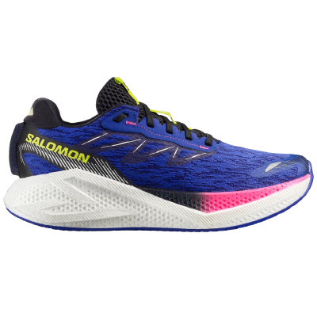
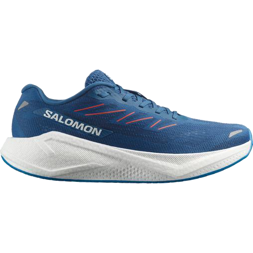
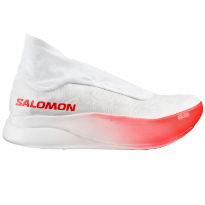
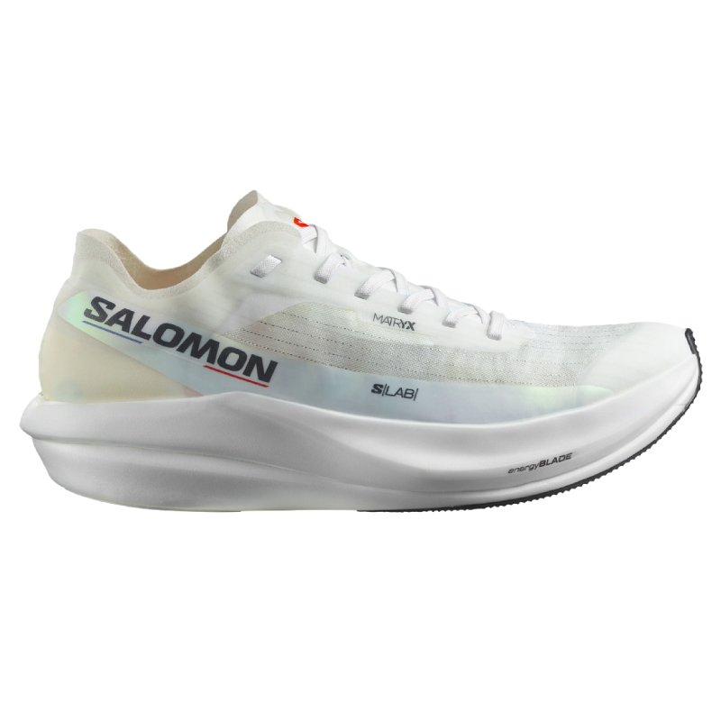
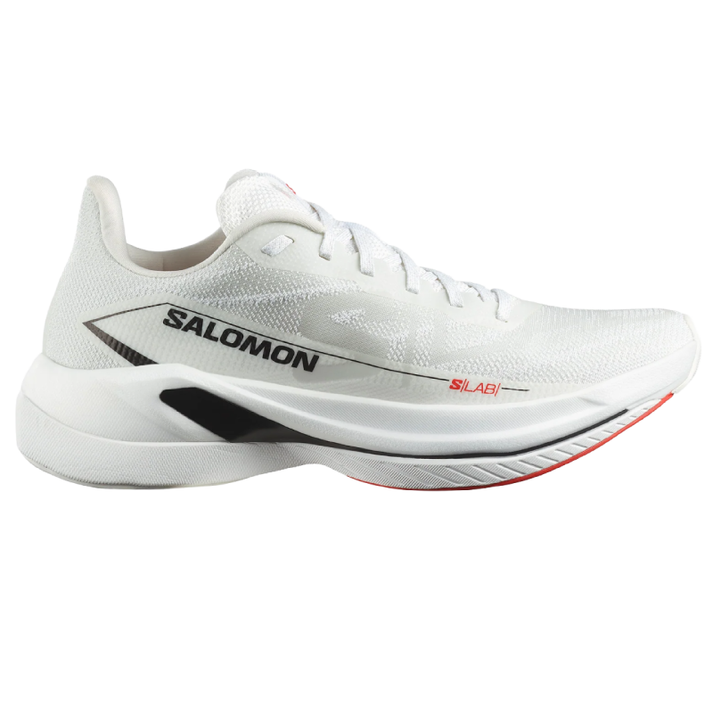
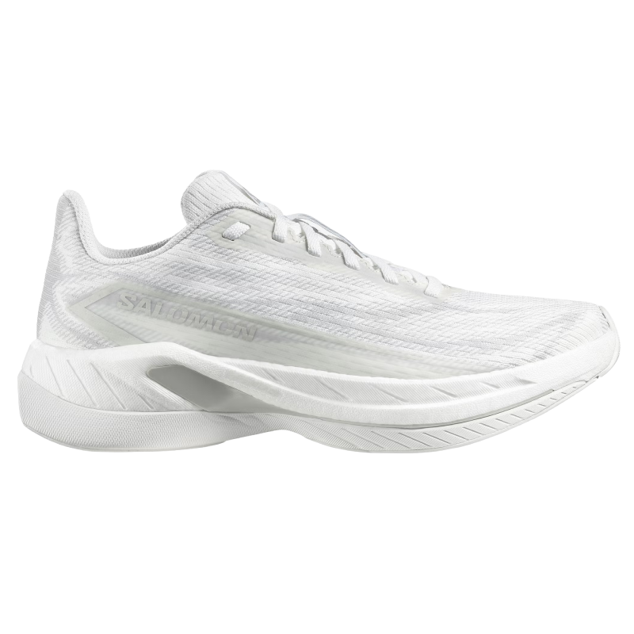
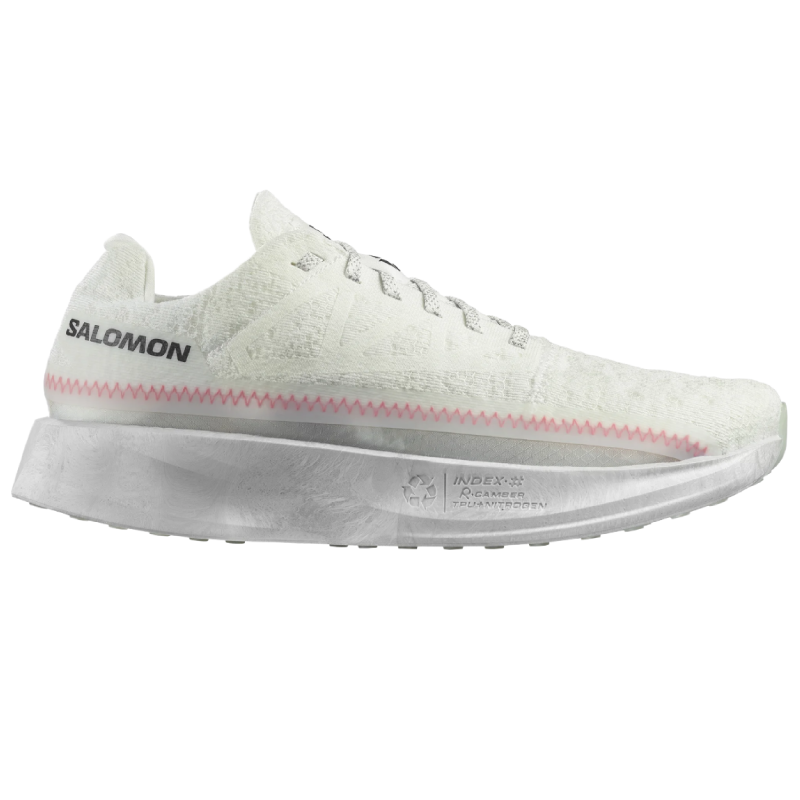

Dynamic comfort
Aero Glide 4, Aero Blaze 3
For long-distance runners and everyday runners seeking cushioning, smooth transitions, and dynamic comfort.
- Easy to moderate pace
- Smooth running feel
- Cushion and bounce
Module 3 | Road running
Module 3 | Road running
![Salomon logo](data:image/svg+xml,%3c?xml%20version='1.0'%20encoding='UTF-8'?%3e%3csvg%20id='Layer_2'%20xmlns='http://www.w3.org/2000/svg'%20width='1825.87'%20height='203.3'%20viewBox='0%200%201825.87%20203.3'%3e%3cdefs%3e%3cstyle%3e.cls-1{fill:%23fff;}%3c/style%3e%3c/defs%3e%3cg%20id='Layer_1-2'%3e%3cpath%20class='cls-1'%20d='M332.26,2.3l-106.63,199h71.84l16.89-36h78.38l6.69,36h71.83L430.1,2.3h-97.84ZM375.67,42.3h.59l13.35,84h-58.07l44.13-84Z'/%3e%3cpolygon%20class='cls-1'%20points='520.84%202.3%20489.97%20201.3%20660.53%20201.3%20667.63%20153.3%20565.83%20153.3%20589.64%202.3%20520.84%202.3'/%3e%3cpolygon%20class='cls-1'%20points='1168.84%202.3%201103%20151.3%201102.44%20151.3%201084.11%202.3%20996.2%202.3%20919.88%20201.3%20987.12%20201.3%201037.34%2057.3%201037.9%2057.3%201053.84%20201.3%201135.35%20201.3%201197.23%2061.3%201197.86%2061.3%201208.16%20201.3%201277.02%20201.3%201259.02%202.3%201168.84%202.3'/%3e%3cpolygon%20class='cls-1'%20points='1763.74%202.3%201740.34%20148.3%201739.77%20148.3%201674.31%202.3%201581.26%202.3%201550.34%20201.3%201615.9%20201.3%201635.99%2058.3%201636.56%2058.3%201698.6%20201.3%201794.87%20201.3%201825.87%202.3%201763.74%202.3'/%3e%3cpath%20class='cls-1'%20d='M707.74,190.04c-18.89-10.79-27.74-29.03-21.86-59.86l10.9-57.57c5.94-30.75,21.86-49.31,44.93-60.1,23.07-10.79,52.93-12.51,87.17-12.51s63.11,1.72,82.01,12.51c18.61,10.79,27.45,29.35,21.51,60.1l-10.9,57.57c-5.87,30.74-21.58,48.98-44.29,59.86-22.71,10.88-53.14,12.84-87.31,12.84s-63.26-1.96-82.08-12.84M852.72,126.26l9.76-48.17c6.16-31.32-5.59-34.51-42.17-34.51-34.6,0-49.6,2.86-56.11,34.51l-9.76,48.17c-6.44,31.89,6.16,34.75,42.17,34.75s49.6-3.11,56.11-34.75'/%3e%3cpath%20class='cls-1'%20d='M1319.57,190.04c-18.89-10.79-27.67-29.03-21.86-59.86l10.97-57.57c5.94-30.75,21.86-49.31,44.86-60.1C1376.45,1.72,1406.46.08,1440.7.08s63.11,1.72,82.15,12.51c18.54,10.79,27.45,29.35,21.51,60.1l-10.97,57.57c-5.94,30.74-21.51,48.98-44.29,59.86-22.78,10.88-53.14,12.84-87.38,12.84-34.6,0-63.19-1.96-82.01-12.84M1464.62,126.26l9.69-48.17c6.23-31.32-5.59-34.51-42.17-34.51-34.6,0-49.67,2.86-56.11,34.51l-9.76,48.17c-6.51,31.89,6.23,34.75,42.24,34.75s49.67-3.11,56.11-34.75'/%3e%3cpath%20class='cls-1'%20d='M205.66.3c34.84,0,44.23,12.81,38.98,38.67l-6.51,31.33h-64.19l3.56-17.11c2.37-11.47.34-14-17.74-15.15-5.01-.32-14.77-.57-22.49-.57-12.39,0-25.12.33-31.99.9-10.95,1.15-13.67,3.44-14.52,7.7-1.44,7.12-.33,10.32,15.96,18.02l100.4,47.75c19.86,9.42,22.24,15.4,19.27,30.05l-4.16,19.41c-6.53,30.55-16.3,42.01-57.71,42.01H48.61c-38.52,0-53.28-12.85-47.35-41.43l5.94-28.57h61.46l-4.14,19.94c-1.19,5.73.84,9.4,9.49,10.87,7.12,1.15,15.93,1.39,32.78,1.39,10.93,0,23.38-.33,31.69-.82,10.59-.9,12.96-2.61,14.15-8.59,1.44-6.87-.34-9.4-21.86-19.7l-74.21-35.07c-29.23-13.98-34.57-24.85-30.75-43.65l3.9-18.64C36.14,7.74,47.41.3,90.02.3h115.64Z'/%3e%3c/g%3e%3c/svg%3e) Module 3
Module 3 Road running
Most road runners are looking for one of two things: smoother comfort or faster response. Start there, then guide them to the right shoe.
Start here
Start the conversation by finding out whether the runner wants smoother comfort or a faster, more propulsive feel. Once that is clear, the right road model becomes much easier to recommend. The following are key Salomon road running models and who they are for.
Aero Glide 4, Aero Blaze 3
For long-distance runners and everyday runners seeking cushioning, smooth transitions, and dynamic comfort.
S/LAB Phantasm 3
For fast-paced runners chasing performance, energy return, and a lighter, more propulsive road feeling.
Road lineup
Click each shoe to reveal more product detail.
Dynamic comfort
Dynamic comfort is for road runners who want smooth cushioning, everyday versatility, and easy miles. Start here with Aero Glide 4 and Aero Blaze 3.

The iconic premium comfort road model
Aero Glide 4 is the premium comfort answer for long-distance runners and everyday runners who want cushioning and smooth, easy miles.
Reveal moreTech features
Use
Long distance
Everyday road
Ride
Soft cushioning
Smooth transitions
Feel
Premium comfort
Runner
Comfort-led
Mileage-focused
Key features
What to say
Use Aero Glide 4 for runners who want the plushest, most comfort-led road feeling in the range.

Made for everyone, a reliable everyday running shoe
Aero Blaze 3 is the one shoe that nails every session. It mixes cushioning, dynamic comfort, and smooth transitions in a lightweight construction with premium-feel performance.
Reveal moreTech features
Drop
8 mm
35 / 27mm
Weight
230 g
M UK 8.5
193 g
W UK 5.5
Cushion
Regular
Practice
Running
Terrain
Road
Fit
Standard
Key features
What to say
Frame Aero Blaze 3 as the go-to road shoe: very good at everything, versatile, light, and dynamic.
Dynamic speed
Dynamic speed is for runners who clearly want propulsion, performance training, and a faster road feeling. Start here with S/LAB Phantasm 3.

The road answer for maximum propulsion
S/LAB Phantasm 3 is the speed answer for runners who want maximum energy return, lighter-feeling speed, and a stronger performance-training point of view.
Reveal moreTech features
Use
Performance training
Competition
Ride
Propulsive
Fast turnover
Feel
Lightweight speed
Runner
Performance-led
Key features
What to say
Lead with S/LAB Phantasm 3 when the customer wants to run fast and clearly identifies as performance-minded rather than comfort-led.
More road shoes
These are supporting road models to know when the customer wants a more specific race, speed, or multi-activity option.

S/LAB Proracing concept
Part of the S/LAB Proracing concept within the road range.

S/LAB Proracing concept
Another speed-led S/LAB option in the road range.

Performance and racing
A performance and racing option for runners looking for a faster road shoe.

Recreational multi-activity
A comfort-led option for broader recreational and multi-activity use.
Selling starts
Listen for the ride feel the runner wants, name the best place to start, and explain the benefit in plain language.
Tap a customer line to reveal the answer
Start with
Aero Blaze 3
Why
Aero Blaze 3 is the reliable everyday-running answer and the broadest road recommendation in the pack.
Start with
Aero Glide 4
Why
Aero Glide 4 is the clearest answer for premium cushion and bounce.
Start with
S/LAB Phantasm 3
Why
That request points directly to the speed side of the range and the S/LAB Phantasm 3 story.
Team activity
Use this activity to practice opening quickly, reading the runner, and guiding them toward the right road shoe.
Divide the team into two groups: customers and sales associates.
Form two lines facing each other.
Customers each hide a random object behind their back.
Sales associates have up to 10 seconds to break the ice with one sentence based on that object.
Walk forward, swap roles, and repeat.
Debrief what felt easy to connect, what felt difficult, and what made the customer react.
Try these opening lines
What kind of run are you shopping for most?
Do you want the ride to feel softer and easier, or faster and more responsive?
Is this mainly for everyday runs, longer comfort runs, or speed sessions?
Do you want one shoe for most runs, or something more performance-led?